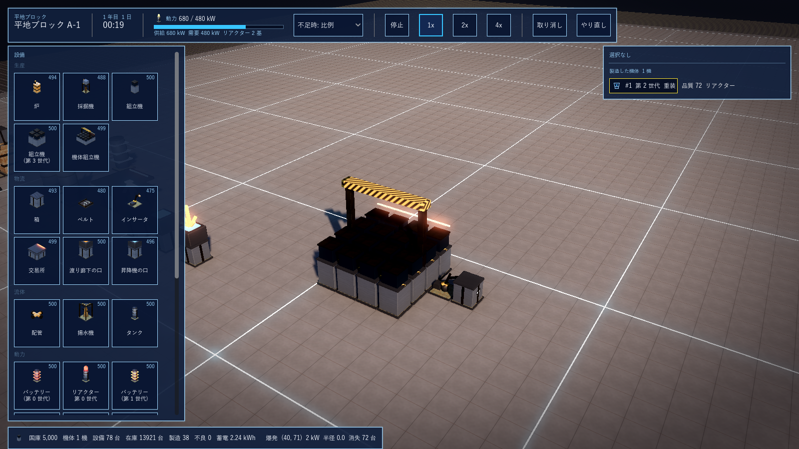

G14 手順3 機体の製造
2026-10-15 に G1 から分離。機体組立機・世代ごとのレシピ・品質の門。
1. 手順3: 機体の製造(2026-10-15)
機体組立機(mech_assembler 4x4、要員 4、300 kW、L3)に世代ごとのレシピ(mech_g1〜mech_g6 × 動力源 リアクター / バッテリー = 12)。部品は 頭 1・胴 1・腕 2・脚 2・背部 1・武装 1 と、リアクター核 1 またはバッテリーパック 1(新レシピ、L2)。品質の門: 第 1〜4 世代は通常以上、第 5 は高品質以上、第 6 は最高品質のみ(工場の世代は第 5 までなので、第 6 は第 5 世代の設備で最高品質の部品から組む)。組立は失敗しない(門を満たす部品が揃えば必ず組み上がる)。系統(重装 / 高速 / 汎用)は組立機の設定(SetArchetype)。
できた機体は Factory.Mechs に実体として登録する: 番号、世代、系統、動力源、品質(部品 9 点の平均)、部品ごとの品質、製造した建物。性能値(装甲・速度・火力・索敵)への換算と軍の Unit への受け渡し、機体のキャラクリ(部位の部品と配色の選択)との結び付けは手順 4 で行う。編集画面: 機体組立機のパレット、板に系統の選択とレシピ(出力に「機体 第 N 世代」の札)、選択なしの板に製造した機体の一覧、下の帯に機体数と完成の通知。xunit は 30 件(+1: 世代ごとの門、系統、動力源、第 5・6 の門で着手しないこと)。
